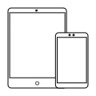

age element diagnosis system
Tecnologia de diagnostico para definir el personalizado a las necesidades del cliente
age element patients
Aceso a listas y fichas de pacientes de age diagnostic system
age element resources
Aceso a contenidos formativos y comerciales